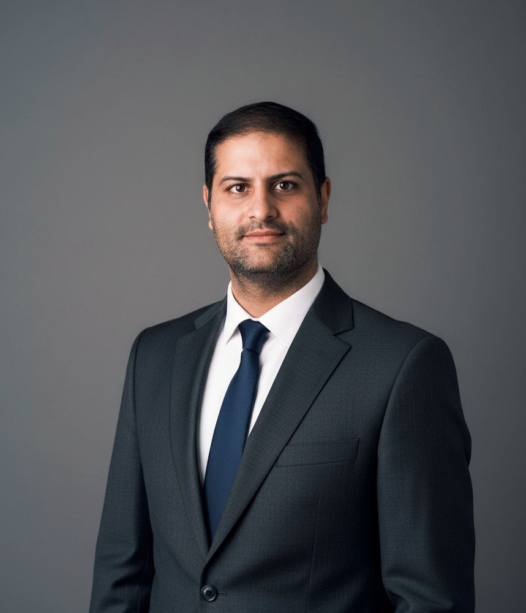

1
Embedded platforms
Linux systems, STM, NXP, ESP and custom board support, from first concept to implementation.

Embedded systems projects for Linux, STM, NXP, ESP, BeagleBone, control systems, communication stacks, Linux drivers, sensor integration, and project architecture.
Linux systems, STM, NXP, ESP and custom board support, from first concept to implementation.
Motor control, Linux drivers, sensor and camera integration, debugging, optimization, and bring-up.
RTOS, communication protocols, Git collaboration, and structured development for technical projects.
I help clients transform embedded ideas into clear technical plans and working systems. My focus is on embedded Linux, STM, NXP, ESP, BeagleBone, motor control, communication protocols, and product architecture.
I can support projects such as Linux driver development, adding new components and devices (sensors or cameras, etc), integrating communication such as CAN, Modbus, UART, SPI, or I2C, and improving control applications for motors and industrial devices.
This website allows clients to understand my profile first, then move into a structured consultation request with a questionnaire and booking section. The consultation process is designed to clarify the client's needs and technical scope, ensuring a productive and focused session.
The client can choose the project core, describe the engineering need, explain the project, and request an appointment time and day.